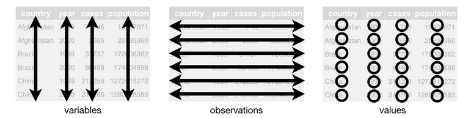
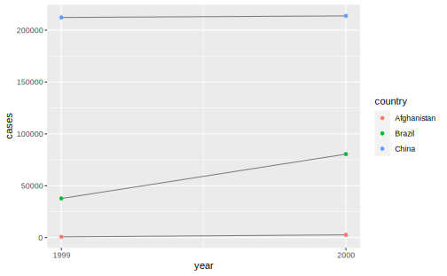

6.1 Tidy data
“Happy families are all alike; every unhappy family is unhappy in its own way.” –– Leo Tolstoy
“Tidy datasets are all alike, but every messy dataset is messy in its own way.” –– Hadley Wickham
整洁数据 (Tidy data) 是进行数据操作和 ggplot2 可视化的基础，所谓数据整理（清洗、清理），就是把 messy data 转换为 tidy data 的过程。在 tidyverse 生态中，tidyr 负责数据的整理和变型：
如果一个数据集是整洁的，需要满足以下三个要素：
1. 每个变量有一个专属列 (Each variable must have its own column)
2. 每个观测有一个专属行 (Each observation must have its own row)
3. 每个值有一个专属的存储单元 (Each value must its own cell)

这三条规则是互相关联的，不可能只满足三条规则中的两条，所以我们可以更简化地把清洁数据的要求写成：
1. 每列是一个变量(Variables go in columns)
2. 每行是一个观测(Observatiosn go in rows)
同样的数据可以有不同的表现形式，但只有满足整洁数据的三个条件的数据集才是最容易使用的。以下的 3 个数据集背后的均来自1999年和2000年世界卫生组织在阿富汗、巴西和中国的一次肺结核病例调查，都有 country、year、cases 和 population四个变量，但采用了不同的组织方式:
table1
#> # A tibble: 6 x 4
#> country year cases population
#> <chr> <int> <int> <int>
#> 1 Afghanistan 1999 745 19987071
#> 2 Afghanistan 2000 2666 20595360
#> 3 Brazil 1999 37737 172006362
#> 4 Brazil 2000 80488 174504898
#> 5 China 1999 212258 1272915272
#> 6 China 2000 213766 1280428583
table2
#> # A tibble: 12 x 4
#> country year type count
#> <chr> <int> <chr> <int>
#> 1 Afghanistan 1999 cases 745
#> 2 Afghanistan 1999 population 19987071
#> 3 Afghanistan 2000 cases 2666
#> 4 Afghanistan 2000 population 20595360
#> 5 Brazil 1999 cases 37737
#> 6 Brazil 1999 population 172006362
#> # ... with 6 more rows
table3
#> # A tibble: 6 x 3
#> country year rate
#> * <chr> <int> <chr>
#> 1 Afghanistan 1999 745/19987071
#> 2 Afghanistan 2000 2666/20595360
#> 3 Brazil 1999 37737/172006362
#> 4 Brazil 2000 80488/174504898
#> 5 China 1999 212258/1272915272
#> 6 China 2000 213766/1280428583table4a 和 table4b分别是以 cases 和 population 为值的数据透视表：
table4a
#> # A tibble: 3 x 3
#> country `1999` `2000`
#> * <chr> <int> <int>
#> 1 Afghanistan 745 2666
#> 2 Brazil 37737 80488
#> 3 China 212258 213766
table4b
#> # A tibble: 3 x 3
#> country `1999` `2000`
#> * <chr> <int> <int>
#> 1 Afghanistan 19987071 20595360
#> 2 Brazil 172006362 174504898
#> 3 China 1272915272 1280428583在上面的例子中，只有table1 符合清洁数据的标准。在table2 中，type不是一个变量，它的值 cases 和 population 才是变量，进而导致了每一行不是一个完整的观测。在 table3 中，rate 同样不是一个变量，cases 和 population 的值被挤在了一个单元里。至于 table4a 和table4b，1999 和 2000不是变量，而是一个表示年份的变量的值。
为什么要为获得清洁的数据如此大费周折呢？主要有两个优点：
- 清洁数据的规则使得我们可以遵从一个一致、明确的结构存储数据。学习处理这些数据的工具变得很容易，因为你的对象在底层是一致的。
- 把变量存储在列中可以把 R 的向量化函数优势发挥到极致。例如
mutate()和summarize()，许多内置的 R 函数都是对向量进行操作的。只要有了清洁的数据，后面的数据变换工作就很容易：
# Compute rate per 10,000
table1 %>%
mutate(rate = cases / population * 10000)
#> mutate: new variable 'rate' with 6 unique values and 0% NA
#> # A tibble: 6 x 5
#> country year cases population rate
#> <chr> <int> <int> <int> <dbl>
#> 1 Afghanistan 1999 745 19987071 0.373
#> 2 Afghanistan 2000 2666 20595360 1.29
#> 3 Brazil 1999 37737 172006362 2.19
#> 4 Brazil 2000 80488 174504898 4.61
#> 5 China 1999 212258 1272915272 1.67
#> 6 China 2000 213766 1280428583 1.67
# Compute cases per year
table1 %>%
group_by(year) %>%
summarize(cases = sum(cases))
#> group_by: one grouping variable (year)
#> summarize: now 2 rows and 2 columns, ungrouped
#> # A tibble: 2 x 2
#> year cases
#> <int> <int>
#> 1 1999 250740
#> 2 2000 296920
# 或者：
table1 %>%
count(year, wt = cases)
#> count: now 2 rows and 2 columns, ungrouped
#> # A tibble: 2 x 2
#> year n
#> <int> <int>
#> 1 1999 250740
#> 2 2000 296920
# Visualise changes over time
library(ggplot2)
ggplot(table1, aes(year, cases)) +
geom_line(aes(group = country), colour = "grey50") +
geom_point(aes(colour = country))+
scale_x_continuous(breaks = c(1999,2000),labels = c("1999","2000"))
6.1.1 Exercises
table2 计算发病率 (rate = cases / population), 需要进行以下四步操作：
* 得到每个国家每年的cases* 得到每个国家每年的
population* 计算
rate = cases / population* 把算好的数据存储到正确的位置
首先，分别对 cases 和population建立一张表，并且确保两张表的排列顺序相同：
table2
#> # A tibble: 12 x 4
#> country year type count
#> <chr> <int> <chr> <int>
#> 1 Afghanistan 1999 cases 745
#> 2 Afghanistan 1999 population 19987071
#> 3 Afghanistan 2000 cases 2666
#> 4 Afghanistan 2000 population 20595360
#> 5 Brazil 1999 cases 37737
#> 6 Brazil 1999 population 172006362
#> # ... with 6 more rows
(t2_cases <- filter(table2, type == "cases") %>%
rename(cases = count) %>%
arrange(country, year))
#> filter: removed 6 rows (50%), 6 rows remaining
#> rename: renamed one variable (cases)
#> # A tibble: 6 x 4
#> country year type cases
#> <chr> <int> <chr> <int>
#> 1 Afghanistan 1999 cases 745
#> 2 Afghanistan 2000 cases 2666
#> 3 Brazil 1999 cases 37737
#> 4 Brazil 2000 cases 80488
#> 5 China 1999 cases 212258
#> 6 China 2000 cases 213766
(t2_population <- filter(table2, type == "population") %>%
rename(population = count) %>%
arrange(country, year))
#> filter: removed 6 rows (50%), 6 rows remaining
#> rename: renamed one variable (population)
#> # A tibble: 6 x 4
#> country year type population
#> <chr> <int> <chr> <int>
#> 1 Afghanistan 1999 population 19987071
#> 2 Afghanistan 2000 population 20595360
#> 3 Brazil 1999 population 172006362
#> 4 Brazil 2000 population 174504898
#> 5 China 1999 population 1272915272
#> 6 China 2000 population 1280428583计算 rate
t2_cases_per_cap <- tibble(
t2_cases$country,
t2_cases$year,
cases = t2_cases$cases,
population = t2_population$population
)
t2_cases_per_cap
#> # A tibble: 6 x 4
#> `t2_cases$country` `t2_cases$year` cases population
#> <chr> <int> <int> <int>
#> 1 Afghanistan 1999 745 19987071
#> 2 Afghanistan 2000 2666 20595360
#> 3 Brazil 1999 37737 172006362
#> 4 Brazil 2000 80488 174504898
#> 5 China 1999 212258 1272915272
#> 6 China 2000 213766 1280428583
t2_cases_per_cap %>%
mutate(rate = cases/population) %>%
select(1,2,5) %>%
# 改变列名
mutate(
country = t2_cases$country,
year = t2_cases$year
) %>%
select(country, year, rate)
#> mutate: new variable 'rate' with 6 unique values and 0% NA
#> select: dropped 2 variables (cases, population)
#> mutate: new variable 'country' with 3 unique values and 0% NA
#> new variable 'year' with 2 unique values and 0% NA
#> select: dropped 2 variables (t2_cases$country, t2_cases$year)
#> # A tibble: 6 x 3
#> country year rate
#> <chr> <int> <dbl>
#> 1 Afghanistan 1999 0.0000373
#> 2 Afghanistan 2000 0.000129
#> 3 Brazil 1999 0.000219
#> 4 Brazil 2000 0.000461
#> 5 China 1999 0.000167
#> 6 China 2000 0.000167